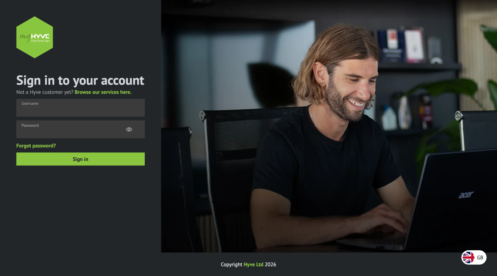

MyHyve Ticketing Portal
Mid-Level Engineer at Hyve Managed Hosting · 2025 - 2026
Maintained and modernised Hyve's Angular/C# support ticketing portal. Upgraded Angular from v19 to v21, cut npm audit findings from more than 50 to fewer than five and resolved three of four critical findings, and introduced Angular signals, rxResource and Tailwind CSS to replace older Sass mixins.
Proposed feature-oriented code organisation and began applying it across the application. Personally built and deployed a recurring monthly ticket workflow that surfaces previously overlooked maintenance tasks, validated by Customer Experience after engineering evaluation.
Visit the site (opens in a new tab)
